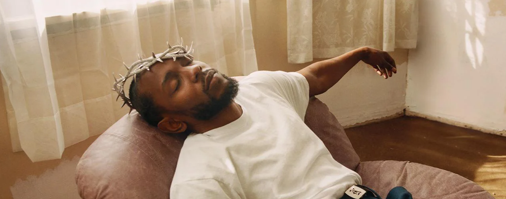

MuRate
Música, pasión, comunidad.

Grammys 2023: Nominaciones
Los Grammys 2023 han dado mucho de que hablar. Como de costumbre, la Academia se aleja de la opinión de la escena hip-hop, con un enfoque que prima lo mainstream sobre la calidad y la innovación.
Estos han sido los nominados del año en las categorias principales:
Canción del año:
- Adele - "Easy on Me"
- Beyoncé - "Break My Soul"
- Bonnie Raitt - "Just Like That"
- DJ Khaled - "God Did"
- Gayle - "ABCDEFU"
- Harry Styles - "As It Was"
- Kendrick Lamar - "The Heart Part 5"
- Lizzo - "About Damn Time"
- Steve Lacy - "Bad Habit"
- Taylor Swift - "All Too Well (10 Minute Version)"
Empezamos por la canción del año. Varias de las nominaciones podían verse venir, y más con lo influyente que ha sido TikTok a la hora de viralizar contenido. No nos podíamos sacar de la cabeza temazos como "As It Was" o "About Damn Time". Otros, como "ABCDEFU" o la tan sobrevalorada "God Did" no pasan nuestro corte ni por asomo... Nuestras favoritas: "Break My Soul" y "The Heart Part 5". Rompedoras, distintas, atrevidas e influyentes.
Álbum del año:
- ABBA - Voyage
- Adele - 30
- Bad Bunny - Un Verano Sin Ti
- Beyoncé - Renaissance
- Brandi Carlile - In These Silent Days
- Coldplay - Music of the Spheres
- Harry Styles - Harry's House
- Kendrick Lamar - Mr. Morale & the Big Steppers
- Lizzo - Special
- Mary J. Blige - Good Morning Gorgeous (Deluxe)
Pasamos a la que consideramos la categoría de mayor peso de la ceremonia: álbum del año. De una forma u otra, todos han calado en el panorama y, sin duda, cada uno de ellos ha ocupado un puesto relevante en el foco del oyente promedio. Ahora bien, consideramos que no existe debate alguno en esta categoría: Renaissance es lo mejor que le ha pasado a la música en años, y merece, por su influencia y su creatividad, este premio más que ningún otro.
Mejor álbum de rap:
- DJ Khaled - God Did
- Future - I Never Liked You
- Jack Harlow - Come Home the Kids Miss You
- Kendrick Lamar - Mr. Morale & the Big Steppers
- Pusha T - It's Almost Dry
Por último, cabe mencionar otra categoría importante: mejor álbum de rap. Cuando se hicieron públicas las nominaciones más de uno se llevó las manos a la cabeza, y no es para menos; se hace notoria la ausencia de nombres como JID o Denzel Curry, autores de los (discutiblemente) mejores álbumes de rap de 2023: The Forever Story y Melt My Eyez, See Your Future. Sin embargo, aparecen otros LPs básicos y sin sustancia, de Jack Harlow y DJ Khaled. Si bien son personas que atraen más miradas dado su carácter mediático, consideramos que sus obras son no solo mediocres, sino de lo peor que pudo reproducirse este año.
Una decepción más a la lista de tantas que la Academia se ha esforzado en regalarnos esta década. Nuestro favorito, por si alguno no lo ha intuido todavía, es Kendrick, que se haría con su tercer Grammy consecutivo en la categoría. De momento.
Volver atrás